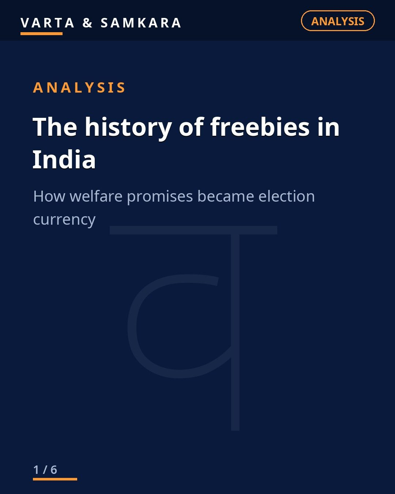
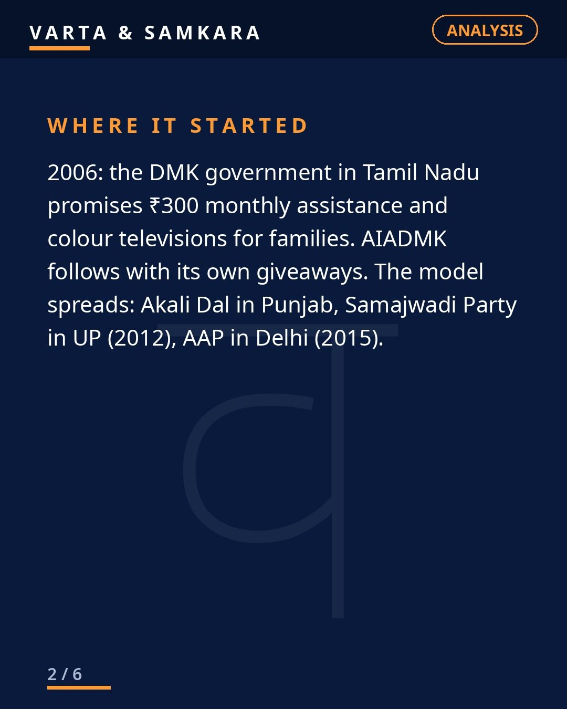
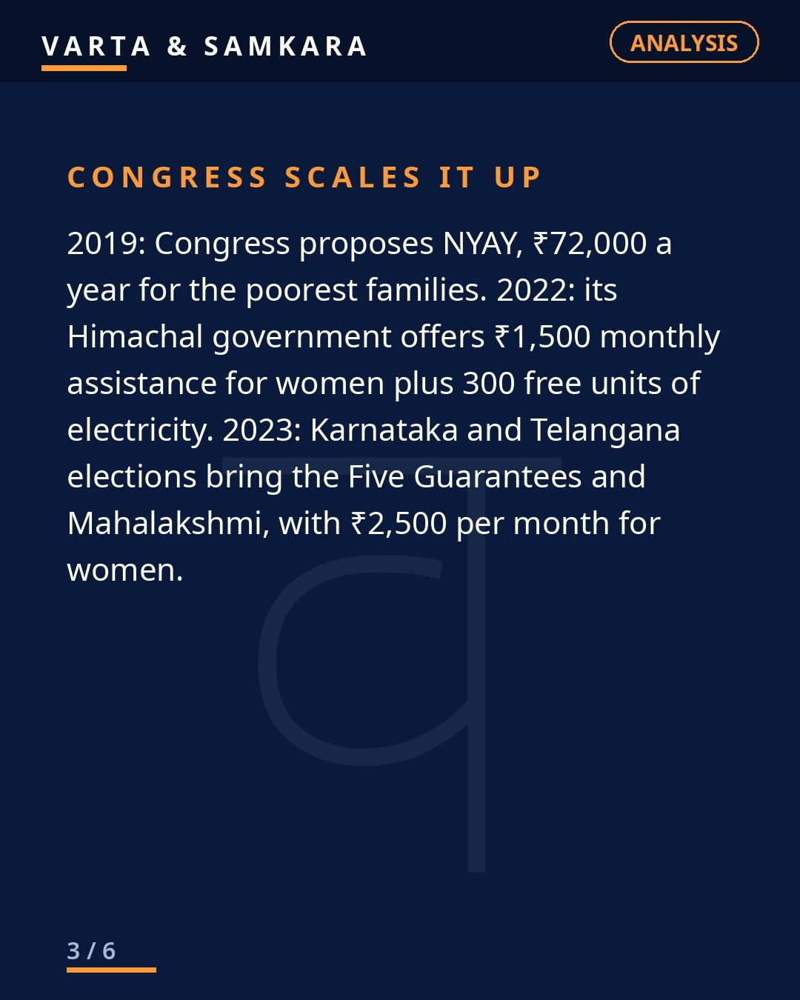
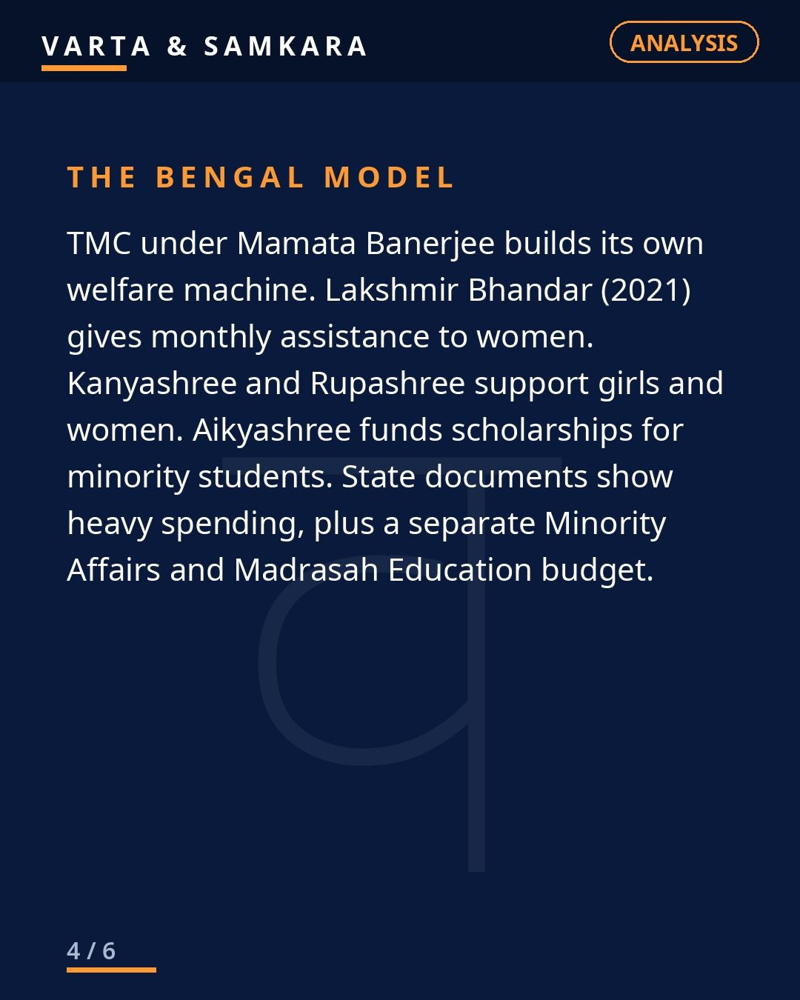
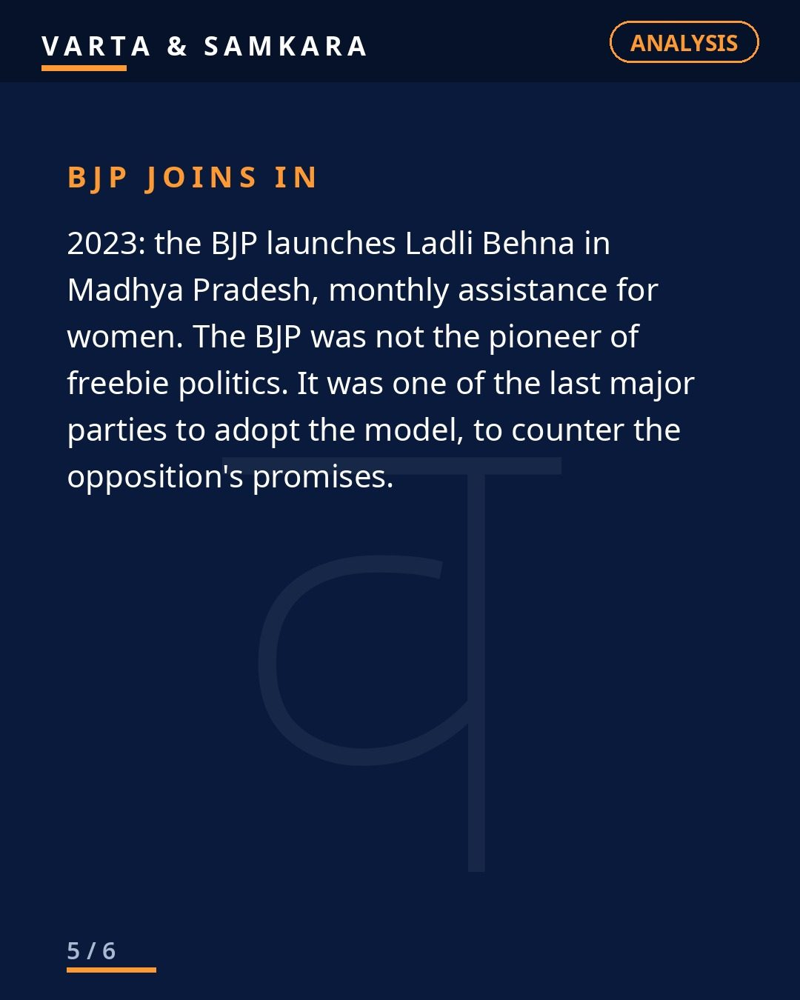
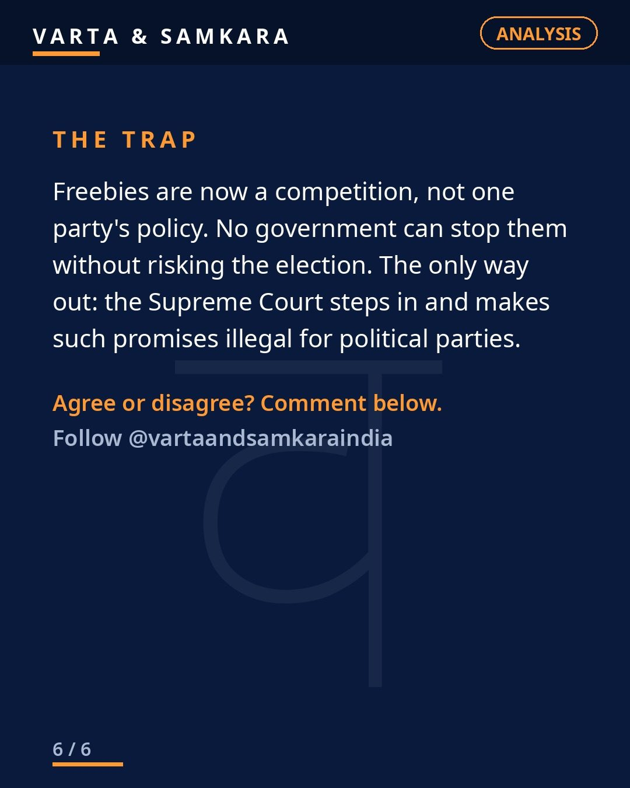

ANALYSIS | The history of freebies in India.

Every election season in India comes with a familiar ritual: parties outbidding each other with freebies. Free electricity, free bus rides, monthly cash for women, free laptops, free TVs. It feels like it has always been this way. It has not. Somebody started it, and the trail is worth following.
2006: Where it began
2006: the DMK in Tamil Nadu promises 300 rupees monthly assistance and colour TVs. The AIADMK follows. That is the origin point of modern freebie politics in India. Not Delhi, not a national party, Tamil Nadu.
Once the template proved it could win elections, it spread like a formula. The Akali Dal in Punjab. The SP in UP in 2012. AAP in Delhi in 2015, turning free water and electricity into a whole political brand. Congress scaled it up: NYAY's 72,000 rupees a year promise in 2019, 1,500 rupees a month for women in Himachal in 2022, the guarantee packages in Karnataka and Telangana in 2023. The TMC built the Bengal model around it: Lakshmir Bhandar, Kanyashree, Rupashree, Aikyashree.
The BJP was not the pioneer
Here is the part people forget. The BJP was not the pioneer of freebie politics. It was one of the last major parties to adopt it. For years it criticized the practice, and then in 2023 it joined in with Ladli Behna in Madhya Pradesh, because by then the electoral math was impossible to ignore.
That is the real story of freebies in India. It is not about one party's ideology. It is about a competitive trap. Once voters start expecting direct benefits, any party that refuses to offer them is fighting with one hand tied. So everybody offers them. The competition is not about who believes in freebies. It is about who cannot afford to stop.
Why nobody can stop it now
Now no government can touch freebies without risking the election. That is not a prediction, that is the observed reality across states. Roll back a popular cash scheme and the opposition will promise to double it. Promise fiscal discipline and you will be outbid by someone promising a fridge.
This is why moral appeals to parties do not work. Asking politicians to voluntarily give up their most effective electoral weapon is asking them to lose on purpose. No party will do it first, because the first one to stop loses and the others learn the lesson.
The only exit: the Supreme Court
The argument is simple: only the Supreme Court can end it, by making such promises illegal. If competitive freebie promises are taken off the table for everyone at once, no party suffers a disadvantage. The playing field stays level, and elections go back to being fought on governance, performance, and ideas.
Whether the Court will actually do this is another question. But logically, it is the only actor that can break the trap, because it is the only actor that does not need to win an election.
Until then, expect every manifesto to read like a shopping catalogue. The 2006 TV promise started something no party knows how to stop.
In pictures





Source: Author's reading of Indian politics
Visuals: Original text graphics
#Freebies#IndianPolitics#Opinion#Analysis#VartaSamkara
See the original reel / carousel with motion graphics on Instagram.
View on Instagram